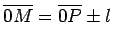
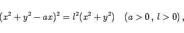
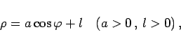
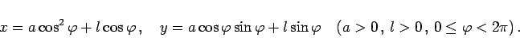
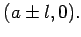
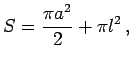

Einen weiteren Spezialfall der allgemeinen Konchoide, die Konchoide des Kreises, mit der Bedingung  (2.221), wobei der Koordinatenursprung auf dem Kreis liegt, nennt man PASCALsche Schnecke.
Die Gleichung lautet in kartesischen und Polarkoordinaten sowie in Parameterform:
|  | (2.224a) |
|  | (2.224b) |
|  | (2.224c) |
Dabei ist a der Durchmesser des Kreises.
Die Scheitel A und B liegen bei  Die Form der Kurve hängt von den Größen a und l ab, wie man aus den drei Abbildungen für die Konchoide des Kreises erkennen kann.
Der Flächeninhalt der Schnecke beträgt  wobei im Falle a > l der Flächeninhalt der inneren Schleife nach dieser Formel doppelt gezählt wird.